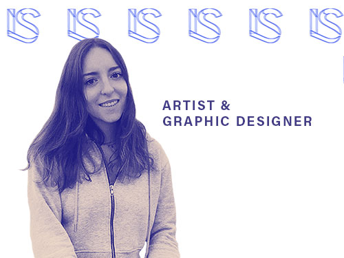

Lucinda's Biography
My name is Lucinda Strol, and I’m a junior studying Graphic Design and Information Management & Technology with a concentration in web design. Currently, I’m most interested in pursuing a career in UI/UX design or publication design. I’ve been working as a digital publisher at the Maxwell School of Citizenship and Public Affairs for almost two years where I create digital and print content for the Executive Education Department. I’m the design director for Jerk Magazine, and I’m also involved with designing for Mixtape Magazine and Women in Communications. I’m skilled in Adobe Illustrator, InDesign, Photoshop, Lightroom, After Effects, XD, and Premiere and have beginner expertise in Python and Microsoft SQL Server.
Personal Info
Besides graphic design, I am passionate about
- Painting
- Drawing
- Photography
- Cooking
- Tennis
I grew up in the Hudson Valley surrounded by scenic views and nature, so as a result, I love the outdoors and hiking. I’ve also been fortunate enough to travel a lot with my family since my father is originally from Romania and my mother is from London.